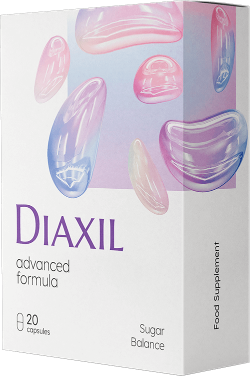

Según la OMS, la diabetes es una de las principales causas de muerte prematura en el mundo.
Según las estadísticas oficiales, actualmente hay 425 millones de personas con diabetes en todo el mundo. Sin embargo, los endocrinólogos estiman que la cifra real es al menos el doble: muchos diabéticos ni siquiera sospechan que tienen diabetes.
Pero, ¿podemos deshacernos del diagnóstico de "diabetes mellitus"para siempre? Esta y otras preguntas serán respondidas hoy por la doctora Aitana Molina Prieto .
— Las estadísticas son decepcionantes: sugieren que el número de pacientes con diabetes tipo 2 está aumentando constantemente. ¿Cuál es la razón de esto?
— En el pasado, la diabetes tipo 2 se llamaba correctamente diabetes de obesidad o diabetes de vejez. Los principales factores en el desarrollo de esta enfermedad son la obesidad, el estilo de vida sedentario, la edad y la predisposición genética.
La epidemia de diabetes, si se puede llamar así, está directamente relacionada con la propagación de la obesidad. El sobrepeso afecta el funcionamiento del tracto gastrointestinal y, en particular, el páncreas, que produce una hormona importante para descomponer los azúcares: la insulina.
— ¿Hay signos que deberían alertar al paciente y alentarlo a ver a un endocrinólogo?
— Sí, hay tales signos, pero aparecen cuando ya hay un aumento significativo en los niveles de azúcar en la sangre. Estamos hablando de boca seca, sed, micción rápida, debilidad.
Estos síntomas pueden aparecer muchos años después del inicio de la enfermedad. Los pequeños saltos en el azúcar en la sangre pueden no mostrarse de ninguna manera.Sin embargo, su presencia durante varios años es un factor de riesgo grave de complicaciones vasculares.
Por lo tanto, las personas en riesgo, es decir, mayores de 40 años y con sobrepeso, deben visitar regularmente a un endocrinólogo.
— La mayoría de los diabéticos ni siquiera tienen idea de cuán grave puede ser esta enfermedad. Cuéntenos cómo la diabetes destruye los órganos internos.
— La diabetes tiene un efecto devastador en todos los órganos y sistemas internos de una persona. El hecho es que nuestros vasos sanguíneos no están diseñados para bombear sangre "dulce": la glucosa daña los vasos pequeños en los riñones y los ojos, lo que lleva gradualmente a insuficiencia renal y pérdida total de la visión.
El riesgo de desarrollar aterosclerosis vascular cerebral y cardíaca aumenta significativamente. Y el daño vascular en las piernas finalmente conduce a la gangrena y la amputación de las extremidades.
— ¿Existe algún preparado que pueda curar completamente la diabetes?
— En los últimos años, nuestro Instituto junto con una compañía farmacéutica de Suiza han desarrollado un remedio para todos los pacientes con diabetes tipo 2. Se llama .
— ¿Cómo funciona ?
— Aumenta gradualmente la secreción de insulina y aumenta la sensibilidad del cuerpo a esta hormona. también inhibe la absorción innecesariamente rápida de carbohidratos en el intestino.
El curso del tratamiento con el producto proporciona una restauración completa de la función pancreática. Como resultado, comienza a producir suficiente insulina sin apoyo farmacológico.
— Entonces, después de tomar , ¿se vuelve más fácil para una persona?
— Sí. contribuye a mejorar la condición humana y prevenir las complicaciones de la diabetes. Limpia los vasos sanguíneos de las placas de colesterol, alivia la hipertensión y asegura que el sistema nervioso funcione correctamente. Junto con el control nutricional, promueve la pérdida de peso al neutralizar la causa más común de la enfermedad: la obesidad.
Cabe señalar que la composición del medicamento incluye solo componentes vegetales: extracto de hongos shiitake, extracto de té verde, berberina, vitaminas C, B6, B9 y B12, oligoelementos zinc y cromo.
— ¿Dónde se puede comprar ?
— es difícil encontrarlos en las farmacias: es un remedio nuevo, por lo que es bastante raro. La compañía de fabricación ha creado un sitio web donde puede pedir al costo, sin un porcentaje adicional de los minoristas.
— Gracias por la entrevista. Creo que fue muy útil para nuestros lectores.
Del Editor: el enlace al sitio donde puede comprar por el precio de la compañía fabricante está a continuación.
Mi madre tiene diabetes desde hace 15 años. Pedí y ahora finalmente vive como una persona normal.
También tengo diabetes. Estoy cansada de esas jeringas interminables...
¡Muchas gracias por este preparado!
Mi abuela tiene muchas enfermedades y hace un año le diagnosticaron diabetes mellitus. Estaba muy preocupada por esto, lloraba, temía complicaciones, amputaciones. A nosotros, los nietos, nos costó mucho ver su condición. Por lo tanto, muchas gracias por este preparado y por el artículo que nos hizo saber sobre él. Mi abuela ya ha comenzado la toma y dice que se siente mucho mejor.
Siempre me sorprendió que los médicos buscaran una cura para el cáncer, el SIDA y otras enfermedades, y que los farmacéuticos no estuvieran interesados en los medicamentos para la diabetes. Me encontré con su artículo casi por casualidad, pero muy emocionado por las noticias sobre . Mi padre es diabético y le pedí algunos paquetes.
¿Alguien ya ha recibido ? ¿Cuánto tiempo esperaron?
Yo lo recibí en tres días.
Solo tengo 45 años y ya soy diabético. Todavía no dependo de la insulina, pero tomo muchos medicamentos todos los días, trato de seguir una dieta estricta (muy difícil). Y los picos de azúcar todavía ocurren con bastante frecuencia. Me has dado la esperanza de una vida plena. Dejé la solicitud en el sitio web, con ganas de comenzar la toma pronto.
He pedido , no puedo esperar a comenzar el curso.
También he sido diabético durante mucho tiempo. Estoy cansado de luchar contra la enfermedad. Espero que me ayude.